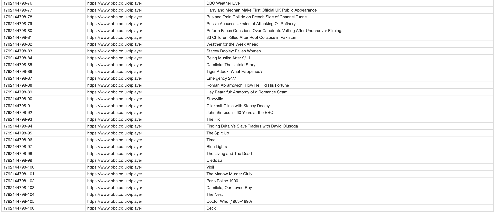

My Digital Media Learning Journey
Weekly reflections
From CampusPress to HTML/CSS to GitHub Pages
Task review: what I did and how it went
The goal of this workshop was to start creating content and publishing it online, laying the foundation for a personal portfolio that I will keep updating. In class, we engaged with three different website-building practices:
-
1
Using a content management system
I activated and familiarised myself with the University of Leeds’ CampusPress site.
CampusPress is a ready-made platform that allows users to choose a template, customise the design and add content without writing any code.
-
2
Building web pages with code
I downloaded VS Code, a code editor, and used it to write my HTML and CSS files.
HTML/CSS, by contrast, required me to write the code myself, which gave me full control over everything from layout to responsive design. It is highly flexible.
-
3
Hosting and publishing publicly
I created a GitHub account, uploaded the code to GitHub and made it publicly accessible through GitHub Pages.
GitHub Pages was the most “magical” step. I created a repository, uploaded index.html and stylesheet.css, enabled Pages in the settings, and a public link was generated. I think of it as a “bridge” between my local files and the public web.
Connections and revelations
Week 1Introducing Digital Practices
Drawing on the lecture and readings, Baym (2010) argues against technological determinism: the meaning of new media is not determined by the technology itself but is assigned by people through use. Through everyday interaction, social norms and cultural context, people integrate technology into their lives.
This made me realise that building a website should involve considering user habits, community atmosphere and meaning-making. Therefore, when designing my personal site, I should think about the connections and communication it will create with others, rather than focusing on the technology alone.
Social media platforms are programmable architectures that organise user interactions and monetise user data, and they rely on algorithms and interfaces to decide what we see, what gets recommended and what gets hidden.
Week 2Understanding Digital Media
This week’s lecture and readings looked at the shift from networks to platforms, and at how algorithms shape what we see online.
On social platforms, algorithms and default interfaces decide how my content is shown. However, when building my own website, I decide the page structure, sequence and key points myself. This difference clearly shows how many decisions a platform makes for us, as the workshop showed in the contrast between CampusPress and VS Code.
Web Scraping
Workshop overview
This week’s workshop introduced us to web scraping. We explored two approaches: WebScraper.io, which runs directly in the browser and which I chose to use, and scraping with the Python programming language, which is more flexible. In class, we practised the process of scraping data.
To be honest, it felt quite complex. It is difficult to understand exactly how every step works, and why, in just a two-hour session, at least for me. After class, I reviewed the process from the very beginning, step by step, to scrape the data again and understand how it all works. Here is the data I scraped:

A problem and how I solved it
The problem
At first, I ran into a problem: I could not scrape the data I actually wanted, which was the individual titles of the shows listed across the page. Despite several attempts, I was still getting only a very small amount of data. (I forgot to take a screenshot at this stage.)
The fix
Eventually, I realised that to scrape all the titles on a page, I needed to select across rows: once I had selected the first piece of data, I also had to select the same type of data on another row before I could collect all the titles.
This made me realise that scraping is not purely a technical task. I had to understand the underlying logic of how it works, and, more importantly, think carefully about what I needed, why I needed it and how I would use the data. This is why understanding HTML and CSS matters: I need to know what the code represents. Beyond technical knowledge, theory and ethics are also important, because they shape how the data I collect will be used.
After these two workshops, I feel better able to think about how web pages operate from a developer’s or technician’s perspective. This is an area I had never really encountered before, as I had only been a user of digital media. I am looking forward to next week’s workshop.
Data Pratices and visualisation
Week 4: choosing a scenario
In the Week 4 workshop, our group chose Scenario 2 which we acted as a data analysis company helping a UK university understand the impact of generative AI on academic integrity. After narrowing down our ideas, we decided on the scope of our data: how do UK universities require students to declare their use of generative AI in assignments? We also discussed ethics, informed consent and data sources. Based on these considerations, we set six variables and collected data from the official websites of ten UK universities (Imperial, KCL, Edinburgh, Manchester, Leeds, Oxford, Cambridge, Bristol, Bath and York).
What I found difficult?
-
1
Deciding the research question
I think the most important step before collecting data is to decide on a specific research question, with clear assumptions and a clear scope. We chose to look at how universities “require” declarations, so our data shows what universities say, not what students actually do. If the question were “how many times a week do students use AI in their studies?”, we would need completely different data. The variables we chose also decide what story the data can tell.
-
2
Designing the variables
Second, I found designing the variables quite challenging, because the variables decide which dimensions of the data we can collect.
-
3
Data gaps
Finally, data gaps were another difficulty. In our case, the data came only from the official websites of UK universities, and the sample had only ten universities, so it cannot represent the whole higher education sector. In addition, we could not access the detailed requirements of many individual courses, and the data lacks the voices of students.
Week 5: sharing and visualising
In Week 5, we shared our data and our process in class. We also learned in detail how to turn data into visual charts in Excel, and the charts made the results look clear and simple. We also learned how to use Ofcom Open Data and Communalytic.
Summary
These two workshops made me realise that data is not simply “found”. It is imagined, collected and classified by people, and every choice behind it involves assumptions and power. This has made me more careful when I judge the data visualisations I see in everyday life.
If I had more time and resources, I would try to include more diverse sources and widen the scope of data collection, so that the data would be less one-sided.
Reading reflection
How do binaries and hierarchies appear in data collection and classification? In my understanding, when we put a complex reality into fixed categories (such as “allowed / not allowed” or “student / non-student”), these categories look neutral, but they actually reflect the position of the people who designed them, and they may leave some groups or situations out.
D’Ignazio and Klein (2020) argue that what gets counted shapes what we can see, and that classification systems often rely on binaries and hierarchies. What is not counted, or cannot be counted, is also worth questioning.
This also made me look again at the platforms I use often. For example, the algorithms of these platforms actually shape my experience, because the content I see is chosen by algorithms based on my data. The terms and conditions are another example, many rules are set by the platform, and users who want to use the service have almost no choice.